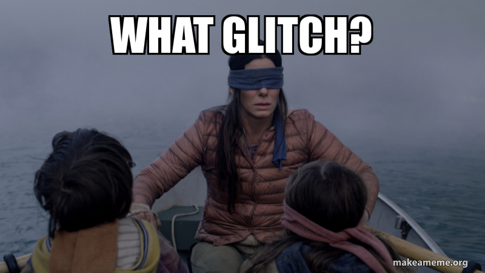
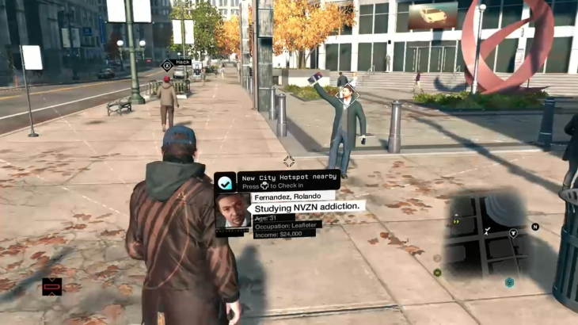
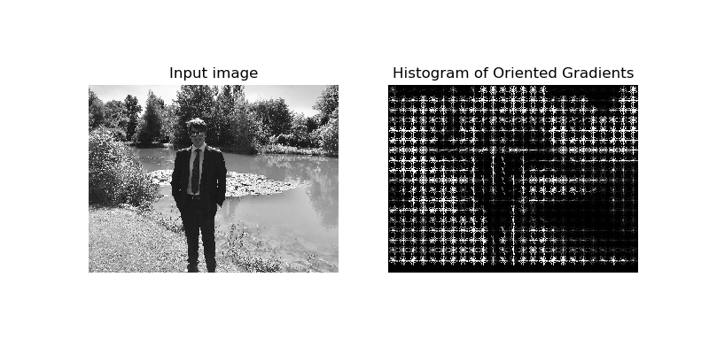
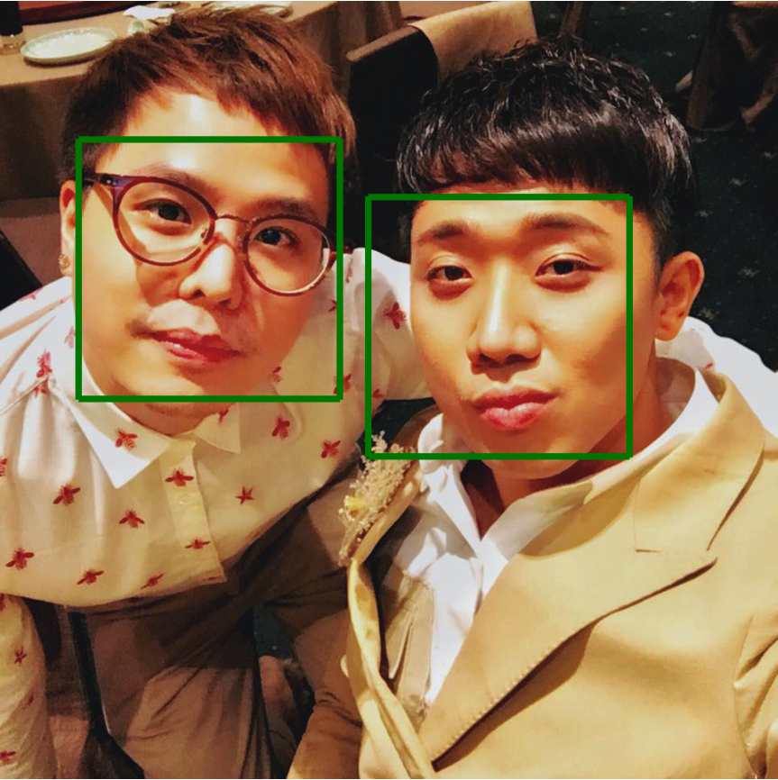

The whole neural network thing
I was first introduced to the visual recognition technique when I first competed in the Kannada MNIST competition on Kaggle. The project required competitors to detect handwritten digit in Kannada, a language that is widely spoken in southwestern India. There were 60,000 pictures of Kannada digits with Arabic numeral labels and 5000 pictures without labels. The machine learning algorithm that I developed was a convolutional neural network (CNN). By tweaking different layers of this network and use manifold mixed up, my accuracy reached a whopping 98.25% accuracy. Still, it took 4 hours to train the CNN with cloud computing. This got me to wonder how arduous it would be to identify human faces!

Maybe I overestimated facial recognition a little bit. In comparison, the Kannada picture has only 784 pixels, while the photo image taken by an average phone camera is x1000 better. Also, the deep learning technology that I used was very primitive.
A great lesson that I learned during the tech transition was that, if you want to learn something, learn a little from the bottom up and then learn from the top down. Even though this ideology conflicted with the academic learning linear-path style that I once possessed, it has carried me successfully through many competitions. My initial google search showed that OpenCV is what people use these days for visual recognition. However, OpenCV does not like Mac, it was hard to install, glitched badly after display images, and took me one whole day to fix the bug.
Soon afterwards, I attended the TAMUHack, a Hackathon that gathered many big tech companies in the U.S. I visited the Google Cloud Vision API workshop and the technology made my jaw drop. Everything I knew about visual recognition was outdated. Google technology sophistication relying on cutting-edge deep learning research, computational power from GPUs, and data resources. Google bought DeepMind, the company created an AI that defeated the "GO" champion, for 400 million dollars just for machine learning. The convinient api undoubtedly blowed my mind .
I spent the following week to learn about Google Cloud Vision API. However, I saw out its limitations. I cannot use its visual recognition API with a task that involves different data sources. I put a hold on the cloud service and brainstorm what I truly want to achieve.
The magical glasses.
If you a GTA V fan, you might have heard of a famous Ubisoft action title, Watch Dogs. The game is about the adventure of Aiden Pierce a high-tech vigilante who hack Chicago’s central operating system. Aiden's criminal activities cost him his niece's life and turned his life upsidedown. One of Aiden's technology enables him to look at people and immediately know their name, occupation, salary, and recent activities.
Watch Dogs inspired me to create a device that can remember my friend's name and remind me the next time I meet them. The reason is I have a really bad memory, especially for the English name. It takes me weeks to remember a person’s name and exponentially worsen when the number of syllables increases.
The library that I used is dlib, a library written in C++ that provides Python binding. This library is user-friendly and does not require GPU for face recognition on still images. There are 3 main steps in the project:
- Obtain data: Data was downloaded from google images. They are celebrities in Viet Nam.
- Face Detector: This is where the complexity begins. There are two main detectors available in the library: histogram of Oriented gradients and linear SVM (HOG SVM+), and CNN. For the sake of simplicity, I chose the HOG SVM+ model because it does not require GPU. 
- Face Encoding: After obtaining the facial locations, I crop them out and store them in arrays. Each image is a 3*Width*Height dimensional array where 3 comes from the RGB values for each pixel. Since each image may have a different dimension, an embedding technique is required to transform these arrays into the same size vectors and safely preserve all the features of the faces. Dlib library provides an encoding function that turns arrays into 128D-vector.
- Face Recognition: There are two simple ways: use a classifier or a built-in comparison function in Dlib
- The classifier approach is self-explanatory. We structure data in the tabular form, split it with k-fold validation, and evaluate with accuracy metric.
- The comparison approach pair-wisely compares the Euclidean distance between an unknown face and a known face. It returns a Boolean vector with true means more than 60% confidence. After that, I take the majority vote to decide which one is the correct label.
After pinpointing the location of the image, I used PIL to draw a rectangle to illustrate what it found. I also manually label each face and it was hilarious.
What will stop me?
There will be many steps until I can reach the magical glasses stages. Some of the concern that might hinder my process:
- Lack of resources: facial recognition is only useful if it can recognize people from different angles. This requires a sufficiently large number of pictures or a short video.
- Legal issues: Texas makes it a crime to intercept or record any "wire, oral, or electronic communication" unless one party to the conversation consents. Eventhough it is legal in public place, many people would not like the idea that their faces being manipulated.
- Time-consuming: This is not a marketable skill so I should not be so serious.